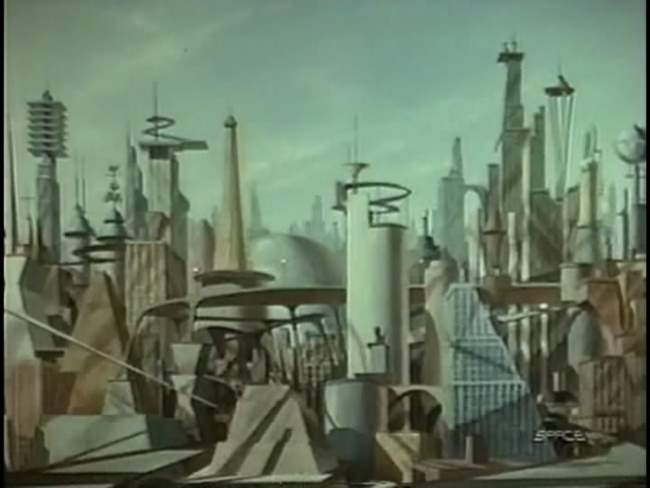
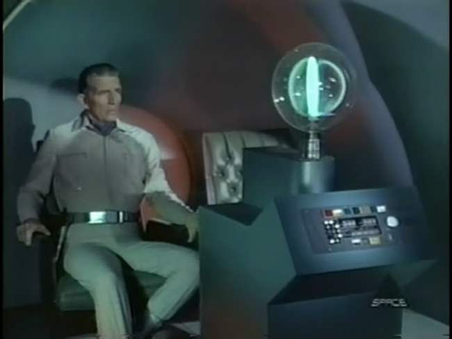
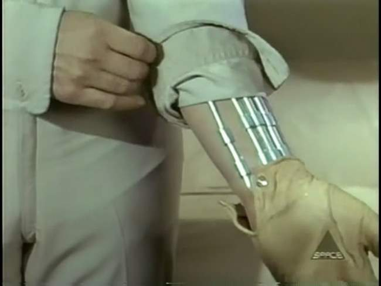
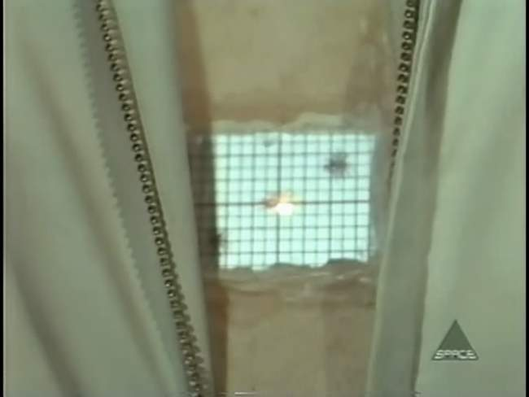
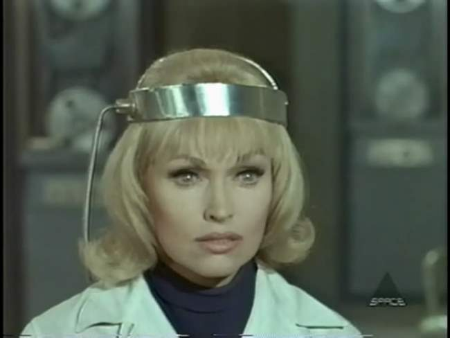
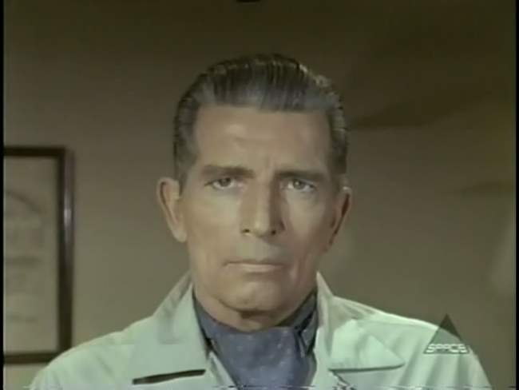
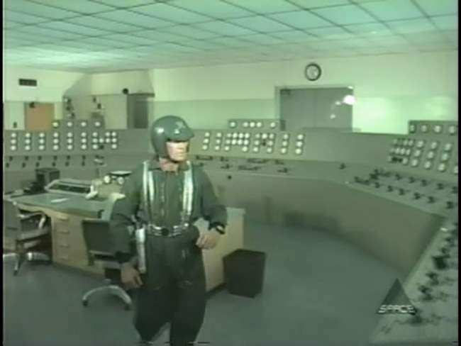

Movie review by : SFAM
Year : 1966
Directed by : Franklin Adreon
Written by : Arthur C. Pierce
Degree of Cyberpunk visuals : Low
Correlation to Cyberpunk themes : High
Rating : 4/10
Key cast members :

Overview: On its face, Cyborg 2087 sounds like the plot for the terminator: this guy from a dystopic future comes back to the past to stop the development of a new technology with lots of promise, that ends up destroying humanity as we know it; unfortunately, he is chased by these cyborg things who are bent on stopping him. While there are certainly some similarities, the differences are perhaps broader. Aside from the obvious budget differences, the plot in Cyborg 2087 involves a cyborg returning from the future versus a man, and he's not trying to perform a "retroactive abortion", he is doing something similar to Sarah Conner in T2 ? he wants to stop the technology from being released at that time.

The Story Genius scientist Professor Sigmund Marx has created a technology that allows us to guide other people and influence their thoughts. Unfortunately, it turns out that this technology will be subverted by the government and military to engage in mass thought control of the population. In the future, humanity's freewill has been crushed. Now a race of cyborgs have taken control to maintain stability. A small group of freedom fighters has come upon a method for restoring humanity. They have created a time machine, and intend to send back a cyborg who has had his "control" chip removed ? the goal of which is to convince Professor Marx to abandon his experiment, or in worse case, to kill him.

The cyborg, Gareth A7 (played by Michael Rennie of Day the Earth Stood Still), doesn't have access to all his technology when he was sent back. Worse, he has a homing beacon implanted in him that will lead the killer cyborgs, called tracers, right to him. He happens upon Professor Marx's assistant, Dr. Sharon Mason (Karen Steele), and uses the perfected form of Marx's technology to overwhelm her freewill and force her to assist him. From there it's a race. The bad cyborgs from the future have arrived and are sporting killer ray guns. Gareth and Sharon must find the professor and convince him prior to the killer cyborgs finding him.

The Acting: The acting in Cyborg 2087 is fairly sub par. Aside from Michael Rennie, who I just enjoy seeing in another flick, the rest of the cast really falls short. Karen Steele over-emotes, as does her secondary love interest, Harey Carey Jr. The tracers are particularly bad, as are most of the bit characters. The Sheriff, played by Wendell Corey, while over the top, is at least well done. The bottom line here, with a budget as low as this one was, the only way Cyborg 2087 could have worked is if the acting paid off ? unfortunately it didn't.

The FX: Cyborg 2087 is very low budget, so we can't expect much in the way of realistic effects. The extent of fanciness here involves making something disappear by taking another shot with the object removed. The ray guns have the cheesy thick white light look, and the outfits are anything but high tech. The opening shot of the futuristic city, which is nothing more than a painting, is at least interesting from the standpoint that it shows you what people in the sixties thought our futuristic cities would look like. At best, Cyborg 2087 tries for the cyberpunk western look, but this too is problematic. Perhaps the worst part of the FX deals with the tracers, who are heavyset guys running around in fake US army costumes. They really coulda spent at least a buck or two to buy an extra who at least was in shape. On top of this, the cartoonish sounding score is especially atrocious. If there were any quality scenes in this movie, the score ensures that they won't be noticed.

Cyborgs: In Cyborg 2087, we are told that the cyborgs are a combination of man and machine, but we really don't get much more of a breakdown than that. We know that they have wide open spaces in their bodies, and that they have the power of five or six men. Basically, the model we get here is of regular people that basically work like simple computers, and are able to have various computer chips embedded in them. In the end, its not a very believable view of cyborgs, and isn't even a consistent one. We are told that cyborgs have no emotion, but somehow, Gareth falls in love with Sharon. The movie would have worked so much better had he let her die near the end versus what did happen (the heroic rescue).

The Bottom Line: Arthur Pierce's script for Cyborg 2087 probably mostly decent (aside for the Hollywood happy ending factor), but unfortunately Franklin Adreon's directing talents are not enough to bring it to a successful fruition. Far too frequently, Cyborg 2087 comes across as poorly done SciFi cheese. Again, had the acting been decent, one could easily overlook the low-qual FX. Unfortunately this is not the case. However, I did find it worthwhile to watch for one reason only ? I loved Michael Rennie in the Day the Earth Stood Still, and really enjoyed seeing him in another flick. His acting is pretty much the same (stoic, serious, impending doom looking demeanor), but at least we get to see him running around and performing action scenes.